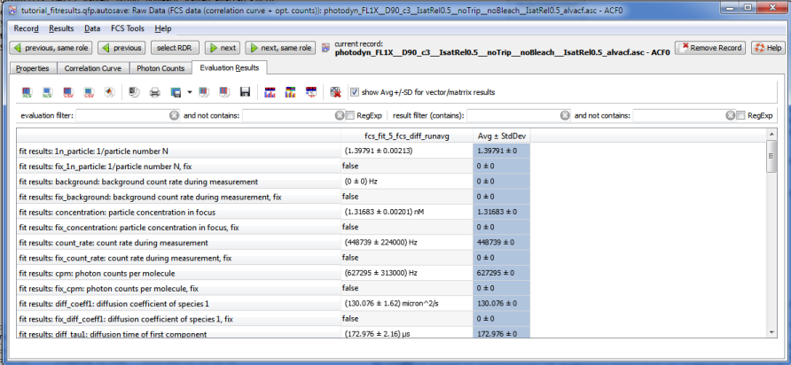
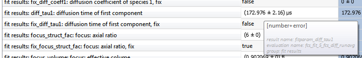
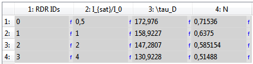
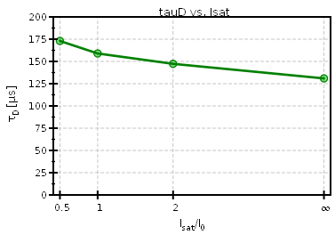
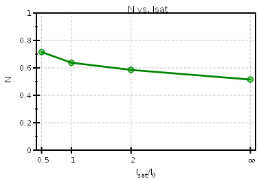
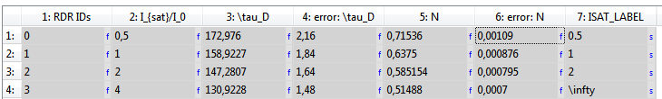
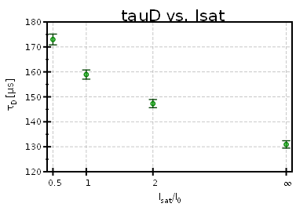

$$qf_commondoc_header.start$$ $$qf_commondoc_header.end$$
Introduction
This tutorial describes, how a table can be automatically built from fit results in the project. For this, it uses the internal expression parser and column expressions. Especially the expression parser functions for project access are used.
It is based on a FCS data evaluation, which is stored in the example project
$$plugin_info:examplesdir:table$$tutorial_fitresults.qfp
Tutorial
- Open the example project tutorial_fitresults.qfp (see above) in QuickFit. You can find it by clicking on File | Special Project Tools ... | Open Example Projects ... in the subfolder qfrdrtable.
This project contains four FCS data files and a FCS curve fit evaluation, which has already been performed. In addition a table is contained, which will be used for this tutorial.
The FCS data is based on simulations of diffusing particles at different levels of saturation intensity $$math:I_{sat}/I_0$$, where $$math:I_{sat}$$ is the saturation intensity of the fluorophore and $$math:I_0$$ is the peak intensity in the laser focus. The lower $$math:I_{sat}/I_0$$, the stronger the focus is broadened by the saturation, so we expect a larger particle number and a higher diffusion time.
- First we may inspect the data, so open one of the FCS RDRs by a double-click on the entry in the project tree. Change over to the Evaluation Results. Here you see a table of fit results for the current data file.

All results are grouped and each group is shown as a column. If you had different evaluations, several groups/columns would be displayed, with possibly different results. The names of the results are shown in the first column. The results from all the RDRs in the project look like this, but will list different result values. The column header fcs_fit_5_fcs_diff_runavg is the same in all of them, since it encodes the used evaluation item (type: fcs_fit, ID: 5). Each fit result has a label, which is displayed in the first column and an internal ID, which is displayed in the tooltip for a cell, which is shown, if the mouse hovers a little longer over the result:

In the example shown here, the evaluation name/ID is fcs_fit_5_fcs_diff_runavg and the result name/ID is fitparam_diff_tau1 for the "diffusion time of first component".
- Now switch to the tab "Properties" and observe the value of the property ISAT in all FCS RDRs. It was set to match the values, used for the simulation. the value 4 is used instead of $$math:\infty$$, i.e. for no saturation effects.
- In the same way, as noted above, also find the evaluation and result name/ID for the parameters "particle number". It should be fcs_fit_5_fcs_diff_runavg/fitparam_n_particle.
- Now close the FCS RDR and open the table. The idea is now, that we want to create a table of the fit results fitparam_n_particle and fitparam_diff_tau1, as well as the property ISAT for each record. In order to obtain this table, follow these steps:
- ensure, that the table contains at least 4 columns
- double-click the first column header and enter these values:$$example:column title: RDR ID
expression: rdr_ids("fcs")$$ This will fill the column with the IDs of all RDRs, which are of the type fcs. In this example, the result should be 0,1,2,3. This first column can now be used to access the data for the records, as shown in the following steps
- double-click the second column header and enter this data:$$example:column title: I_{sat}/I_0
expression: for(i,column(1),rdr_getproperty(i, "ISAT"))$$. This will return a column, containing all the values of the property ISAT for each record. The instruction for() iterates over all entries in the vector column(1), which returns the values in the first column. In each iteration, the variable i is set to a value from column(1) and the fucntion evaluates the expression, given in the last parameter, i.e. it obtains the property from the given RDR. The it combines the results of all iterations into a single vector, which is returned. This is necessary, since the function rdr_getproperty() does not accept array parameters.
- Now set edit the column-properties of the last two columns and set these values: in column 3: $$example:column title: \tau_D
expression: for(i,column(1),rdr_getresult(i, "fcs_fit_5_fcs_diff_runavg", "fitparam_diff_tau1"))$$ and in column 4: $$example:column title: N
expression: for(i,column(1),rdr_getresult(i, "fcs_fit_5_fcs_diff_runavg", "fitparam_n_particle"))$$These instruction work like the one from the last item, except that they extract the fit parameters (compare the evaluation ID and result IDs obatined above!)
- Now you should have a table, that looks like this:

- To finish this part of the tutorial, you can add plots to inspect the data:


- As an addendum to this tutorial, you can also add columns to the table, that contain the fit errors. these column use the expressions: $$example:column title: error: \tau_D
expression: for(i,column(1),rdr_getresulterror(i, "fcs_fit_5_fcs_diff_runavg", "fitparam_diff_tau1"))$$ and $$example:column title: error: N
expression: for(i,column(1),rdr_getresulterror(i, "fcs_fit_5_fcs_diff_runavg", "fitparam_n_particle"))$$ Using these columns will result in a table and plots like these:

